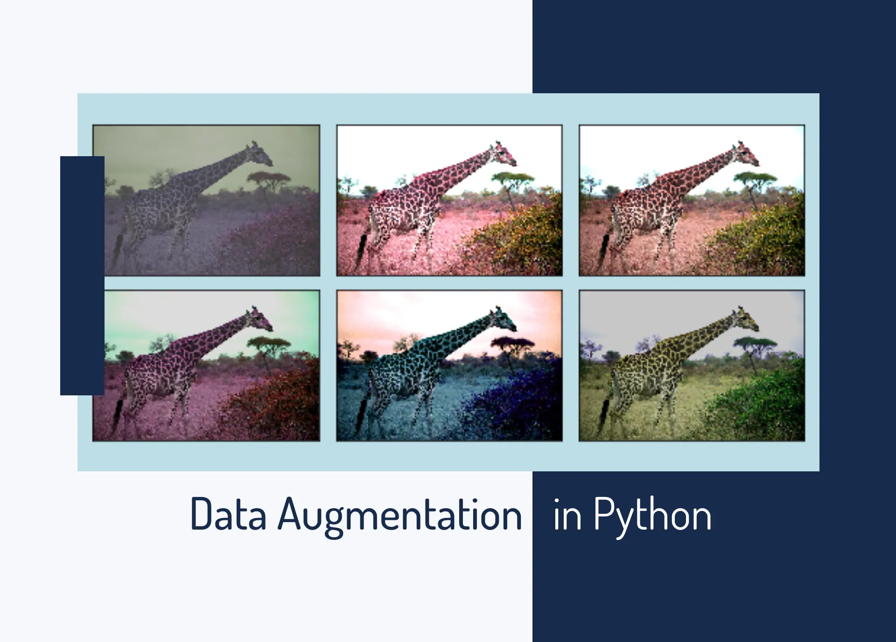

DATA AUGMENTİON

Data augmentation is the process of increasing the amount and diversity of data. We do not collect new data, rather we transform the already present data. I will be talking specifically about image data augmentation in this article.
So we will look at various ways to transform and augment the image data.
This article covers the following articles –
Need for data augmentation
Operations in data augmentation
Data augmentation in Keras
Data augmentation using Augmentor
1. Need for data augmentation
Data augmentation is an integral process in deep learning, as in deep learning we need large amounts of data and in some cases it is not feasible to collect thousands or millions of images, so data augmentation comes to the rescue.
It helps us to increase the size of the dataset and introduce variability in the dataset.
2. Operations in data augmentation
The most commonly used operations are-
1.Rotation
2.Shearing
3.Zooming
4.Cropping
5.Flipping
6.Changing the brightness level
Now we will look at all these operations in detail. I will also provide the code for data augmentation later in the article.
The original image that I will use for illustration
Rotation
Rotation operation as the name suggests, just rotates the image by a certain specified degree.
In the example below, I specified the rotation degree as 40.
Shearing
* Shearing is also used to transform the orientation of the image.
Zooming
* Zooming operation allows us to either zoom in or zoom out.
Cropping
* Cropping allows us to crop the image or select a particular area from an image.
Flipping
* Flipping allows us to flip the orientation of the image. We can use horizontal or vertical flip.
You should use this feature
carefully as there will be scenarios
where this operation might not make much sense e.g.
suppose you are designing a facial recognition system,
then it is highly unlikely that a person will stand upside
down in front of a camera, so you can avoid using the vertical flip operation.
Changing the brightness level
This feature helps us to combat illumination changes.You can encounter a scenario where most of your dataset comprises of images having a similar brightness level e.g. collecting the images of employees entering the office, by augmenting the images we make sure that our model is robust and is able to detect the person even in different surroundings.